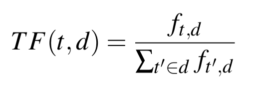
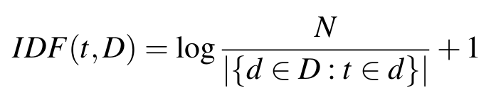
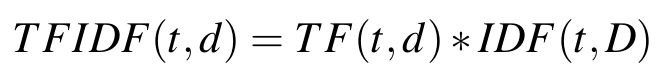
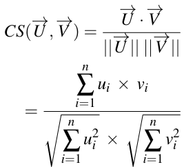

Java

Introduction
In this project, I was tasked with constructing a classifier that can categorise news articles based on their content. Specifically, a dataset consisting of 20 news articles sourced from Sky News (included in the "resources" folder on github). These articles can be broadly classified into two distinct categories, each representing a different topic. For instance, the first category encompasses articles like the one titled "Osiris Rex’s sample from asteroid Bennu will reveal secrets of our solar system". Conversely, the second category includes articles such as the one headlined "Bitcoin slides to five month low amid wider sell-off". The main idea here is to assess the semantic closeness of these 20 news articles by using the Term Frequency-Inverse Document Frequency (TF-IDF) embedding.
Term Frequency-Inverse Document Frequency (TF-IDF) Embedding
TF-IDF is a popular numerical statistic that reflects how important a word is to a document in a collection or corpus. It’s a widely used technique in information retrieval and text mining to evaluate the relevance of words within documents in a dataset. TF-IDF Embedding is a technique where text documents are converted into vector representations such that each document is represented as a vector in a multidimensional space. Each dimension in this space corresponds to a unique word in the corpus vocabulary, and the value in each dimension is the TF-IDF weight of that word in the respective document. A major advantage of using high-dimensional vectors for document representation is their compatibility with further numerical processing tasks, such as input for neural networks. In essence, TF-IDF Embedding acts as a vectorisation procedure. Unlike one-hot encoding—which uniquely numerically identifies each vocabulary word, equating the maximum number to the vocabulary’s size—TF-IDF Embedding maintains words’ intrinsic relevance (or weight) throughout the transformation phase.
As suggested by its name, TF-IDF assigns a score or vectorises a word by calculating the product of the word’s Term Frequency (TF) and the Inverse Document Frequency (IDF).
Term Frequency: The TF represents the occurrence of a term or word in relation to the document’s total word count, expressing how frequently a specific term appears within it. TF is calculated by:
where ft,d is the number of times a word (t) appears in a document d, and ∑t′∈d ft′,d is the total number of words in that document.
Inverse Document Frequency: The IDF signifies the representation of a term based on its occurrence across various documents in a corpus. It quantifies the rarity of a term by determining how frequently it appears, offering insight into the term’s uniqueness or commonality within the corpus. It is calculated by:
where N is the total number of documents in the corpus, |{d ∈ D :t ∈d}| is the number of documents where the word t appears, and log is a natural logarithm (base e).
Then the final TF-IDF is calculated as:

Measuring the semantic closeness
Computational linguistics research holds that word (or document) meaning can be represented by its contextual information because similar contextual distributions tend to share between semantically similar words. Moreover, the "closeness" of two words/documents can bemeasured by Cosine Similarity (CS) (also called cosine distance). CS is a measure of the cosine of the angle between two non-zero vectors.
It is calculated by:
where U is the vector representation of item 1 (in our case VD1) and V is the vector representation of the D2 (VD2). ui i sthe i-th element in U, and vi is the i-th element in V.
To identify the most similar document to the first document (D1), we can calculate its CS value with all the other documents, in this case CS(VD1,VD2) and CS(VD1,VD3). Then the higher the CS value is, the closer a document is to D1.
Assuming that D1 and D2 belong to two different groups and the goal is to determine which group D3 should belong. Then we can calculate CS(VD1,VD3) and CS(VD2,VD3). If CS(VD1,VD3) > CS(VD2,VD3) then D3 is more semantically close to D1, and therefore should belong to the first group.
The Main Tasks
Using the logic stated above, there were 4 main tasks to this project:-
Task 1:
Build an HTML parser that can extract the title and the content of the news articles from the HTML code stored in the myHTMLS variable.
Task 2:
Natural Language Processing (NLP). The first pre-processing task is text cleaning. We need to convert the content to lowercase and remove all the special characters from the extracted content. Second, text lemmatizatiion. Essentially, it involves the process of transforming a word into its simplest form, which allows various inflexions and derivations of a word to be analyzed as a single item. Lastly, we remove stop-words such as ’and’, ’the’, ’is’, and ’in’, which are considered to be of little value in text analysis because they occur frequently across various documents and are generally not essential for understanding the text’s context or semantics.
Task 3:
Converting the comparasions between documents into vectors.
Task 4:
Piece everything together.
-Load the data from the html documents
-Preprocess them (NLP)
-Calculate the TF-IDF Embedding
-Build a vocabulary list based on the cleaned content
-Calculate the Cosine Similarity between a news item and all the others
-Group the results
We are then left with our expected outcome.